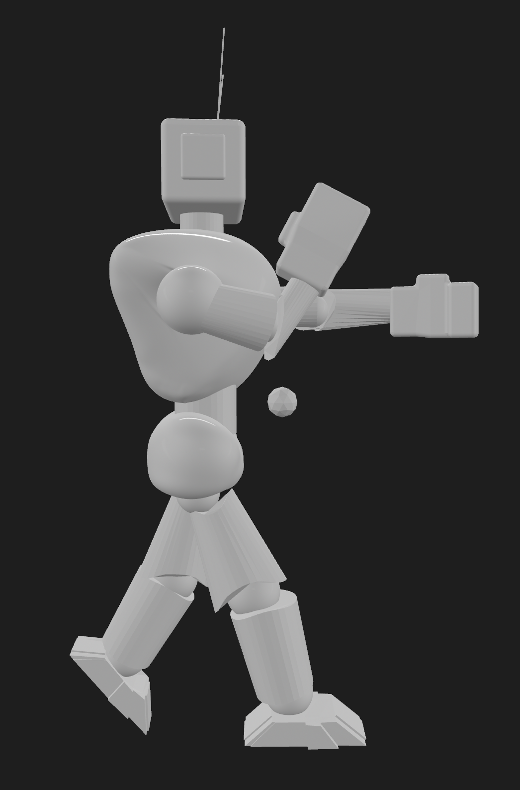
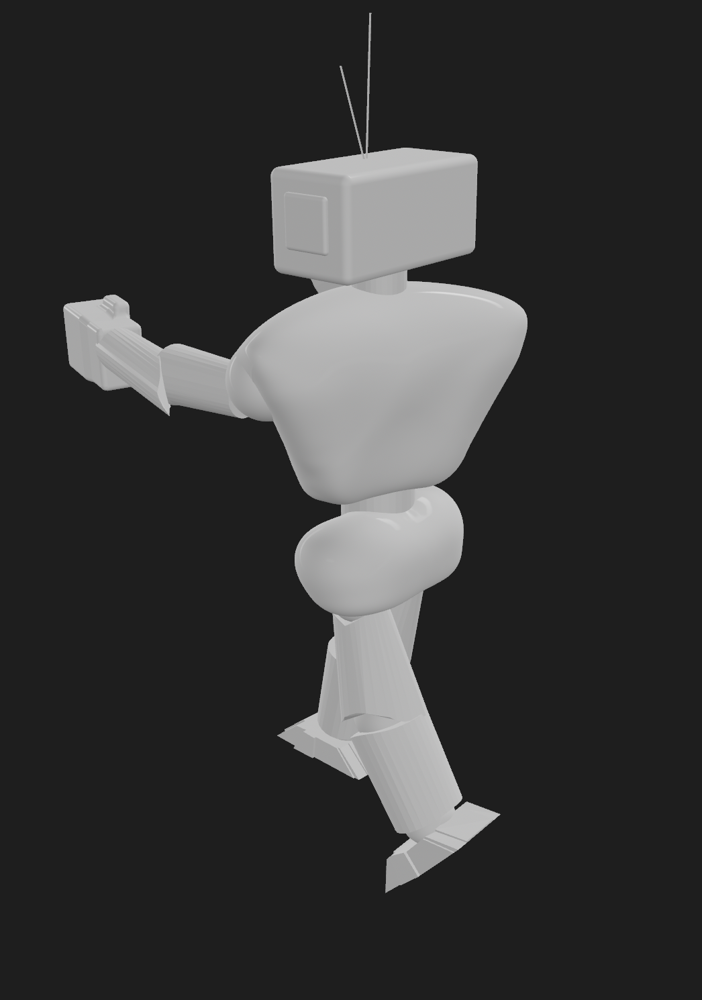

R O B O T
This figurine was created as a beginner project to explore the fundementals of 3D modelling and sculpting on Blender. The goal of making this was to experiment with basic shapes and modifying them. Throughout the process I learnt basic sculpting and scaling. This project helped me gain a better understand of Blenders sculpting tools and design.


Software: Blender
Year: 2025
Focus: Character Sculpting